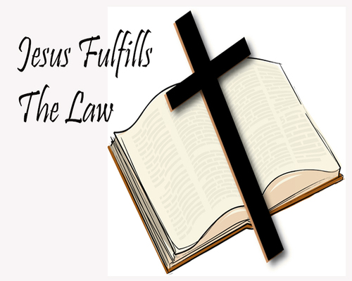

The Sermon On The Mount: The Fulfillment Of The Law
Think not that I am come to destroy the law, or the prophets: I am not come to destroy, but to fulfil.
For verily I say unto you, Till heaven and earth pass, one jot or one tittle shall in no wise pass from the law, till all be fulfilled.
Whosoever therefore shall break one of these least commandments, and shall teach men so, he shall be called the least in the kingdom of heaven: but whosoever shall do and teach them, the same shall be called great in the kingdom of heaven.
For I say unto you, That except your righteousness shall exceed the righteousness of the scribes and Pharisees, ye shall in no case enter into the kingdom of heaven.
Matthew 5:17-20
- 